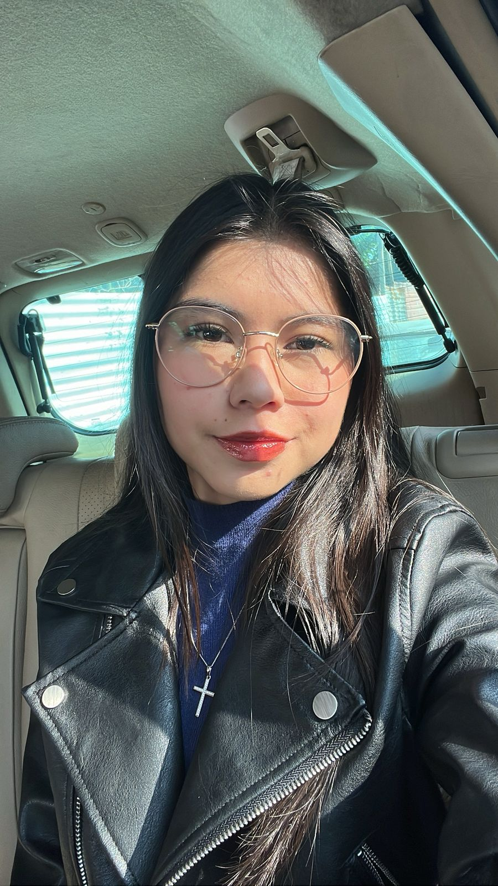
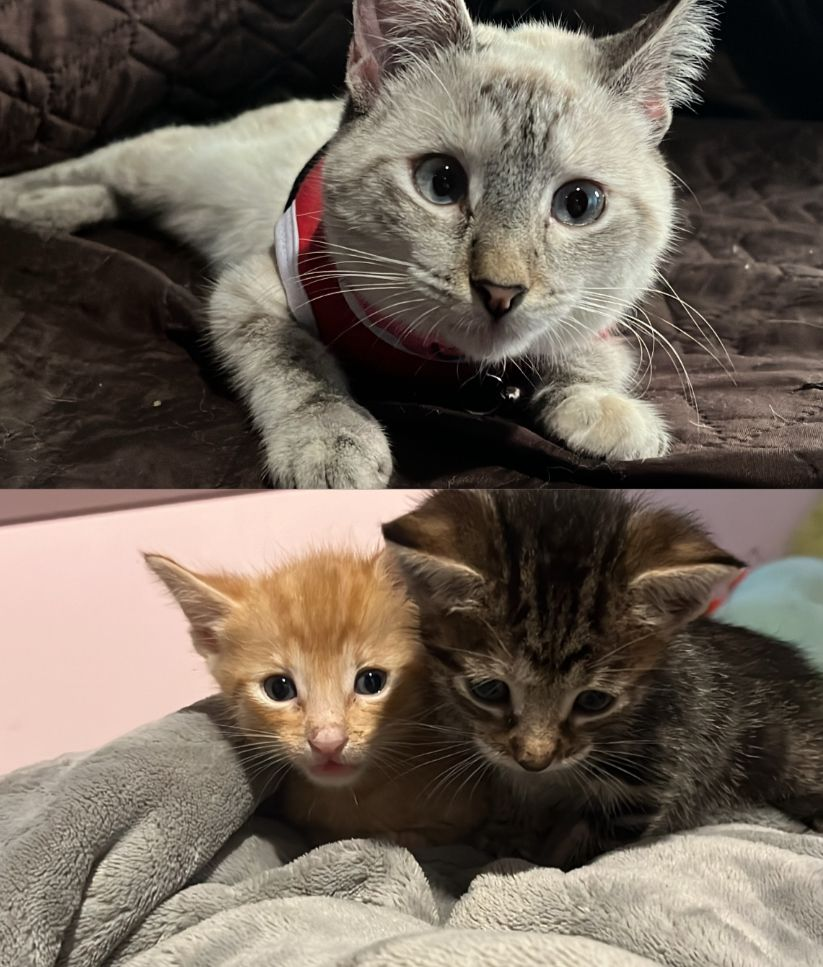
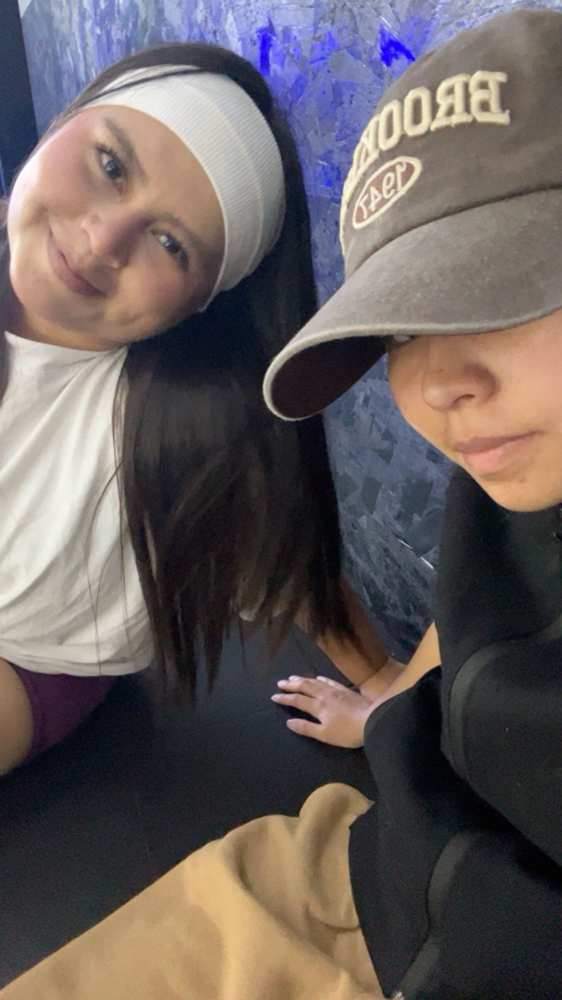

Me apasiona aprender, superarme y trabajar por mis metas. Actualmente estudio Ingeniería en Sistemas, con el deseo de especializarme en Ciberseguridad, aunque también me interesa el área de los seguros. Me considero una persona responsable, honesta, disciplinada y trabajadora. Me gusta plantearme metas, crecer profesionalmente y seguir construyendo mi futuro.

Mis gatitos Cleo, Ares y Ari son una parte muy importante de mi vida. Cleo falleció hace poco tiempo, pero dejó a sus dos hermosos bebés, quienes están por cumplir dos meses. Ares y Ari son muy traviesos, juguetones y cariñosos; muchas veces me despiertan en la madrugada porque quieren jugar o comer. Cleo también hacía lo mismo, por lo que guardo muchos recuerdos bonitos de ella.

Mi hermana ocupa un lugar muy especial en mi vida. Con ella tengo una relación basada en la confianza, el cariño y el apoyo mutuo. Sé que puedo contarle cualquier cosa sin miedo a ser juzgada, porque siempre encontrará la manera de aconsejarme, comprenderme o ayudarme.
Actualmente estudio Ingeniería en Sistemas, continúo desarrollándome profesionalmente en Banco Industrial y sigo aprendiendo sobre tecnología, ciberseguridad y seguros.
Deseo especializarme en Ciberseguridad, obtener una Licenciatura en Seguros, conseguir certificaciones profesionales y seguir creciendo dentro del ámbito tecnológico y financiero.